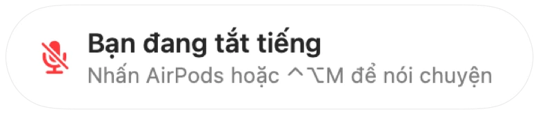

Lời nhắc “Bạn đang tắt tiếng” cho mọi ứng dụng cuộc gọi
Zoom cảnh báo khi bạn nói chuyện lúc đang tắt tiếng. Phần lớn các ứng dụng khác không có tính năng này, còn cuộc gọi trên web thì gần như không bao giờ có. Bạn mải mê giải thích cả phút rồi mới nhận ra mọi người trong cuộc họp vẫn đang đợi.
Muffle nhận biết giọng nói khi bạn đang tắt tiếng và hiển thị lời nhắc trong bất kỳ ứng dụng nào. Khi cuộc gọi dùng AirPods hoặc tai nghe, ứng dụng sẽ lắng nghe micrô tích hợp của Mac và chỉ đo mức âm lượng. Không có gì được ghi âm.
Bật lời nhắc
- 1
Cài đặt Muffle và cho phép truy cập micrô.
- 2
Đảm bảo tùy chọn “Nhắc tôi khi nói chuyện lúc đang tắt tiếng” đã được bật trong Cài đặt Muffle.
- 3
Tham gia cuộc họp bằng AirPods hoặc tai nghe rồi tắt tiếng.
- 4
Bắt đầu nói chuyện. Lời nhắc “Bạn đang tắt tiếng” sẽ xuất hiện.

- Tham gia cuộc gọi mới khi micrô vẫn đang tắt tiếng từ cuộc gọi trước? Muffle sẽ nhắc bạn ngay khi cuộc gọi bắt đầu.
- Tiếng gõ bàn phím sẽ không kích hoạt lời nhắc. Chỉ giọng nói đều đặn mới kích hoạt.
Câu hỏi thường gặp
Lời nhắc có hoạt động với micrô tích hợp của Mac không?
Tính năng này hoạt động khi cuộc gọi dùng AirPods hoặc tai nghe. Nếu cuộc gọi sử dụng micrô của Mac, micrô đó đã bị tắt tiếng nên không thể nghe thấy bạn.
Âm thanh của tôi có bị ghi âm không?
Không. Muffle chỉ đo mức âm lượng và không bao giờ lưu trữ hay gửi bất kỳ âm thanh nào đi.